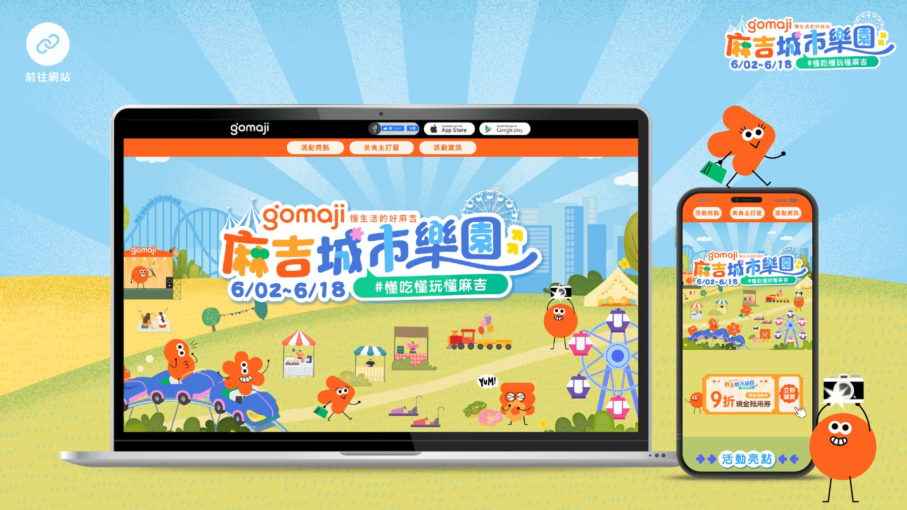
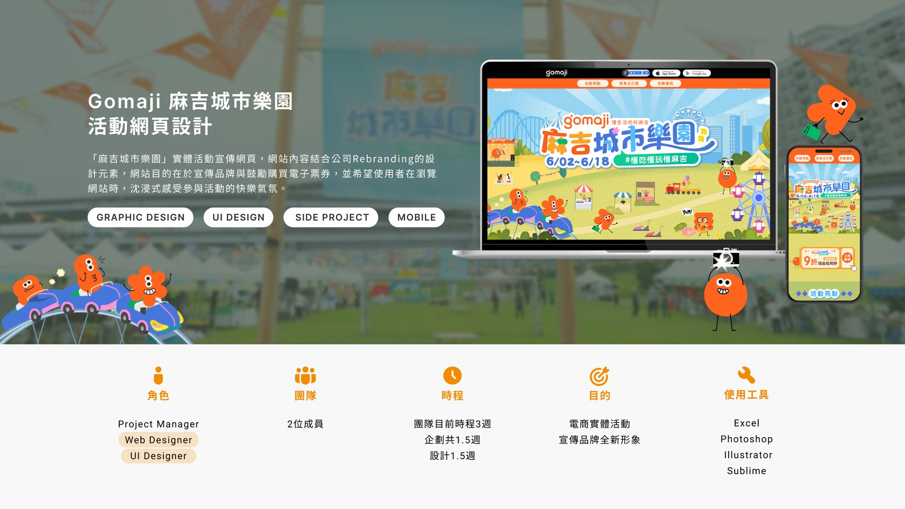
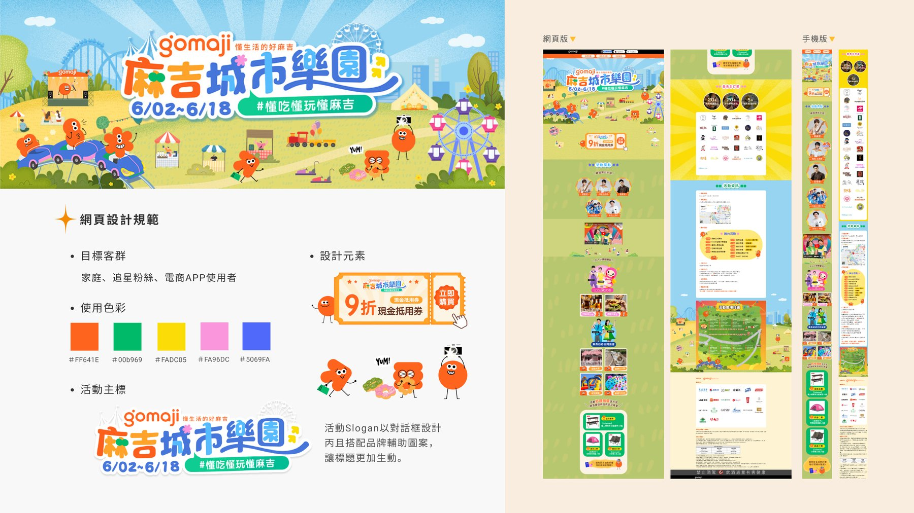
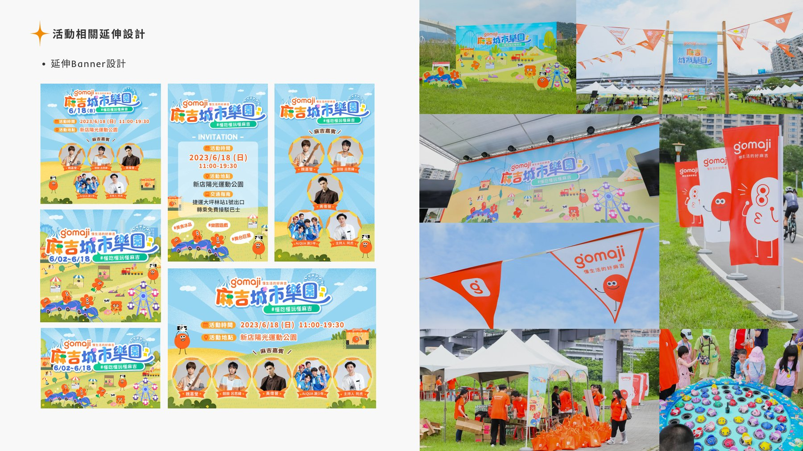

為 GOMAJI 夠麻吉全新品牌識別打造的城市嘉年華宣傳網頁，結合公司 Rebranding 視覺與全新品牌角色 Maji Friend，將購票導購與沉浸式活動氛圍濃縮進一頁式網站，讓使用者在瀏覽網站時就能提前感受到參與活動的快樂氣氛。
這是 GOMAJI 首次以全新品牌識別——鮮明色彩系統結合全新吉祥角色「Maji Friend」——推出的大型實體嘉年華。網站不只要負責活動資訊與購票導購，更肩負著把公司剛完成的 Rebranding 視覺介紹給累積十餘年的舊會員與電商 APP 既有使用者的任務。如何在企劃與設計合計僅 3 週的時程內，讓一頁式網站同時說清楚「品牌煥然一新」與「這個活動好玩」，是最主要的挑戰。
以家庭、追星粉絲與電商 APP 既有使用者為目標客群，我延續品牌新色彩系統（橘 #FF641E、綠 #00b969、黃 #FADC05、粉 #FA96DC、藍 #5069FA），讓活動主標以對話框造型搭配 Maji Friend 角色登場，強化「活潑、親子、有趣」的第一印象；版面採單頁式捲動設計，將活動亮點、美食主打星、活動資訊等段落用色塊分區導覽，並延伸出手機版切版與現場旗幟、看板等實體物料，讓品牌識別從螢幕走進真實會場。
活動網站成功承接了會員導購與品牌識別傳遞的雙重任務：現場吸引超過 5,000 人參與、42 家攤商進駐，優惠券核銷率達 80%；GOMAJI 會員觸及超過 600 萬人次。品牌新視覺也透過網站、周邊物料與現場布置完整落地，成為當年度公司品牌轉型聲量最大的活動之一。

從品牌背景與設計規範，到網頁切版與現場實體物料延伸，這是「麻吉城市樂園」從螢幕走進真實會場的完整過程。



